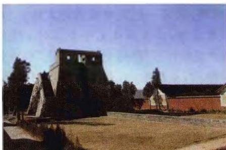
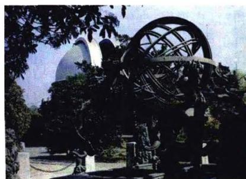
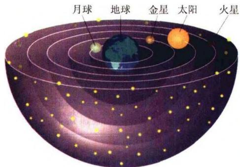
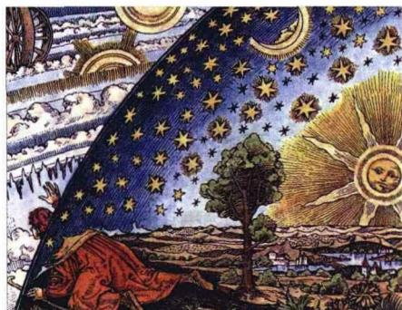

天文学是人类祖先在游牧和农耕时，由于确定季节的需要而诞生的。远古人类在观测天象变化的同时，就开始了对宇宙的思考和认识。宇宙的壮丽使他们赞叹与折服，而宇宙的神秘又使他们恐惧和崇拜，于是就有了种种神话和宗教的出现。
世界各民族都有自己最初关于宇宙结构的看法，以及关于宇宙开创的神话。在我国，远在战国时期的尸佼，就给宇宙下了一个定义：“四方上下曰宇，往古来今为宙”。“四方上下”即空间，“往古今来”即时间，也就是说，宇宙即是时空。这个定义今天看起来仍然是十分科学的，因此可以说，我们祖先对宇宙的理解，远远走在当时世界的最前列。我国古代关于宇宙结构主要有三派学说，即“盖天说”、“浑天说”和“宣夜说”。“盖天说”认为大地是平坦的，天像一把大伞覆盖着大地。“敕勒川，阴山下，天似穹庐，笼盖四野。天苍苍，野茫茫，风吹草低见牛羊。”对于生活在茫茫草原的牧民来说，很容易从直观上得到“天似穹庐”的感觉，“盖天说”也许就是这样产生的。“浑天说”认为天地具有蛋状结构，地在中心，天在周围，其代表人物是东汉著名的科学家兼文学家张衡。他在《浑仪注》中说：
浑天如鸡子。天体圆如弹丸，地如鸡子中黄，孤居于内，天大而地小。天表里有水，天之包地，犹壳之裹黄。天地各乘气而立，载水而浮。……天转如车毂之运也，周旋无端，其形浑浑，故曰浑天。
与浑天说几乎同时发展起来的“宣夜说”则认为，宇宙是无限的，日月星辰皆悬浮在无限的虚空之中。《晋书·天文志》记载：
宣夜之……先师相传云，天了无质，仰而瞻之，高远无极，眼瞀精绝，故苍苍然也。譬之旁望远道之黄山而皆青，俯察千仞之深谷而黝黑，夫青非真色，而黑非有体也。日月众星，自然浮生虚空之中，其行其止，皆需气焉。是以七曜或逝或往，或顺或逆，伏见无常，进退不同，由乎无所根系，故各异也。
“宣夜说”的内容今天看起来也很精彩：它否定了固态的有形有质的“天球”（如女娲补天的“天”，以及古希腊亚里士多德-托勒密体系的缀附着恒星的天球，甚至哥白尼学说中仍然保留的作为宇宙范围的硬壳）。天色苍茫，是因为它“高远无极”，犹如远山色青、深谷色黑。青和黑都只是表象，并不是真的有一个有形体、有颜色的天壳。这样，天的界限被打破了，在无限的空间中，漂浮着日月星辰，它们依靠“气”的作用，各自按不同的规律运动。
关于宇宙的诞生和演化，我国古代文献的论述更是丰富多彩。例如《老子》中说：“天下万物生于有，有生于无。”这和现代宇宙学关于宇宙起源于真空的说法不谋而合。三国时期徐整的“三五历记”中关于盘古的故事说：
天地混沌如鸡子，盘古生于其中。万八千岁，天地开辟。阳清为天，阴浊为地，盘古在其中，一日九变。神于天，圣于地。天日高一丈，地日厚一丈，盘古日长一丈。如此万八千岁，天数极高，地数极深，盘古极长，故天去地九万里。
这立即使我们联想到现代宇宙学中膨胀宇宙的图像。当然，古人的这些说法并不是建立在科学实证基础上的，当时也完全没有科学实证的条件，故只是猜测或神话传说。但也应当看到，在这些充满智慧和灵感的猜测或神话中，蕴涵了深刻的启示和哲理：宇宙并不是生来如此、万古不变的，它也会经历一个从创生到成长的演化过程，这一点与现代科学宇宙观是十分相近的。

图 7.1a 河南登封古观象台遗址
图 7.1b 南京紫金山天文台陈列的浑仪(公元 1437 年仿制)与古代中国类似，巴比伦、埃及、印度等古代文明发源地都有它们自己的关于宇宙起源的神话。古代西方，在爱琴海区域（包括希腊半岛、爱琴海中各岛屿），以及小亚细亚半岛西部海岸地带，诞生了古典的希腊文明，也产生了大量与宇宙有关的传说和神话。例如，公元前八世纪的古希腊诗人希肖特的长诗《神谱》中，就叙述了天上诸神的谱系，以及关于宇宙创生的神话。诗中一段描述天地形成的过程，大意是说，在不知年代的远古，一张巨大无比的张开大嘴首先出现了，这就是混沌初开。接着出现的是宽博胸膛的大地，再接下来出现的是爱神爱罗丝。从这张大嘴里生出阴间和黑夜，它们由爱而结合，黑夜怀胎，产生明亮的天空和白昼。大地诞生出有星星的天穹，天穹笼罩着大地，使大地永不动摇。大地又生出高山和狂怒的大海，山上居住着喜爱山林的半神半人的女神们。
古希腊的哲学家们相信宇宙本身包裹着一个球形外壳，地球居中。建造地心说体系最主要的3位人物，就是柏拉图、亚里士多德和托勒密。实际上，在柏拉图

图 7.2a 古希腊人的宇宙结构图(部分)
图7.2b 欧洲中世纪的宇宙观之前，毕达哥拉斯就已经有了天体做圆周运动的思想。毕达哥拉斯在他的几何中认为，一切立体图形中最美好的是球形，一切平面图形中最美好的是圆形，而整个宇宙是一个和谐体系(Cosmos)的代表物。柏拉图认为，各种天体都是神灵，神灵美好的心使得它们做有规律的运动，它们分别在以地球为中心的同心球壳内运转（见图7.2a）。亚里士多德在《天论》一书中说，“从历代相传的说法来看，亘古以来，最外层的天整个都无变化……天的形状必须是球形的。地球不用说是不动的，它的地位不在别处，只在宇宙的中心。”亚里士多德认为，天上的东西是无生无灭、永恒不变的、无限美好的，而地上的东西在自由运动时是直线行进的，重的垂直向下运动，轻的垂直向上运动。天体由“以太”组成，它们既不重又不轻，因此不做直线运动，而是循一定轨道做圆周运动。托勒密(公元2世纪)在古希腊天文学家喜帕恰斯观测结果的基础上，自己又做了大量观测，写出了古代欧洲最详尽、最完整的天文学巨著——《大系统论》。在这本书中，他用一套复杂的本轮-均轮系统来解释日、月、行星的运动，成为古代欧洲的标准宇宙模型。到了中世纪，托勒密的宇宙体系更成为宗教神学的理论支柱，此时的宇宙学已沦入经院神学的深渊。
1543年，哥白尼的不朽巨著《天体运行论》的书稿在搁置了36年之后，在他临终之时得以出版问世。这是自然科学从神学中解放出来的宣言书。紧接着，意大利哲学家布鲁诺提出宇宙是无限的，时间和空间都是无穷尽的。开普勒把他的老师第谷和他自己的大量天文观测记录加以整理、计算，得到了著名的行星运动的开普勒三定律。他发现行星的运动轨道并非圆形，而是椭圆形，太阳位于椭圆的一个焦点上。这样，从柏拉图、亚里士多德以来被认为最完美、最神圣的圆运动，就彻底结束了它的神话。虽然开普勒并不了解支配天体运动的根本原因所在，只是用“宇宙和谐的韵律”来解释观测到的天体运行规律，但他的工作为牛顿引力理论的发现奠定了坚实的观测基础。牛顿在开普勒和伽利略的大量观测和实验基础上，开创了经典力学。他的引力理论开辟了以力学方法研究宇宙的途径，从此天文学和宇宙学彻底摆脱了宗教神学的羁绊。自亚里士多德以来，就宇宙物质的运动规律而言，总是以月亮为界分成天界和世俗两个截然不同的世界，现在牛顿的力学体系把这两者完全统一起来了。
牛顿以后，天文学的研究步入了科学的发展阶段，人们对宇宙结构和宇宙演化的看法也已主要基于科学规律的思考。18世纪，德国古典哲学的创始人之一康德创立了天体起源的星云说。他在《宇宙发展史概论》一书中写道：
我假定我们太阳系的星球——一切行星和彗星——物质，在太初时都分解为基本微粒并充满整个宇宙空间，现在这些已成形的星体就在这空间中运转。……密度较大而分散的一类微粒，凭借引力从它周围的天空区域里把密度较小的所有物质聚集起来，但它们自己又同所聚集的物质一起，聚集到更大的质点所在的地方，而所有这一些又以同样方式聚集到质点密度更为巨大的地方，并如此一直继续下去。
这些话使我们想到现代宇宙学的天体逐级成团(即等级式成团)的模型。康德并提出“广大无边的宇宙”中有“数量无限的世界和星系”，即“宇宙岛”。他的这些思想尽管由于当时观测条件的限制不能加以验证，但可以看出，这时人们的宇宙观已经是建立在科学知识的基础上了，尽管许多看法仍然属于猜测与推理，但与中世纪的神学已毫无共同之处。康德之后，法国天文学家和数学家拉普拉斯也提出了与康德类似的星云说，这实际上是天体演化学的开端。
18世纪70年代开始，英国天文学家威廉·赫歇尔用他亲手制造的大型望远镜观察恒星世界，一生中共观测了11万多颗恒星。他的儿子约翰·赫歇尔接着把恒星的观测扩展到南半球，共观测了约70万颗恒星。通过这些大量的观测，赫歇尔父子首次发现了银河系的盘状结构，使人们对宇宙的认识远远超出了太阳系的范围。19世纪天体光谱学的发展，对宇宙理论的进步更是起到巨大的推动作用。例如1864年，英国天文学家哈根斯分析了26种元素的光谱和若干恒星光谱之后得出结论说，构成恒星的物质至少部分地和我们的太阳系相同。通过恒星光谱的研究证明宇宙间物质的同一性，这在宇宙论上是一步巨大的跨越。
综上所述，从古代到19世纪末，人类对宇宙的认识经历了从直觉到科学验证的发展历程，积累了大量的观测资料。但是，人们对于宇宙大尺度（或整体）结构的认识，还是停留在静态、不变的观念上，以至于爱因斯坦1917年得到了宇宙的动态解之后，为了与传统的静态宇宙观相一致，不得不人为加上一项宇宙学常数项，以抵消引力的作用。人们的传统观念是如此根深蒂固，爱因斯坦的论文发表之后很长时间，响应者寥寥无几，即使是爱因斯坦的追随者，也是把主要兴趣放在求解方程的数学方面，而不是深入探讨它的宇宙学含义。直到哈勃1929年发现了河外星系普遍的谱线红移，才使得人们回过头来仔细分析爱因斯坦宇宙解的含义，同时出现了许多探讨红移机制的理论，形成了现代宇宙学的第一个活跃期。再例如宇宙热大爆炸理论，它的命运也不见得更佳。自伽莫夫(G. Gamow)等1948年首先提出热大爆炸理论，并预言存在温度为5K的宇宙背景辐射以来，在将近20年的时间内，他们的理论几乎被所有的同行忘记了。直到1965年发现了宇宙微波背景辐射，热大爆炸理论才重新被人们提起，现代宇宙学从此掀开了一个新的篇章。